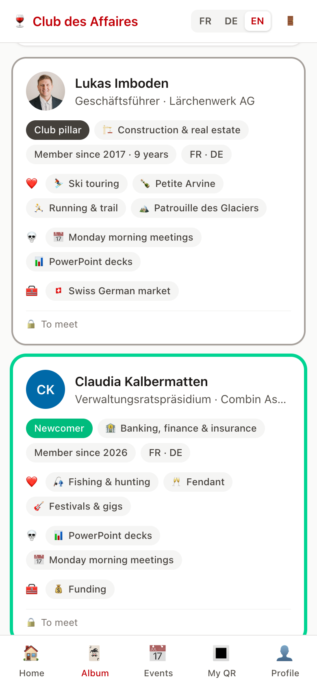

Hack VS · Challenge Foire du Valais
Never a stranger at the Club again.
A year-round networking platform for the members of the Club des Affaires de la Foire du Valais.
Live demo · public on GitHub · FR / DE / EN
Hack VS · Challenge Foire du Valais
A year-round networking platform for the members of the Club des Affaires de la Foire du Valais.
Live demo · public on GitHub · FR / DE / EN

The challenge
≈ 50
business leaders
500
CHF a year, per member
4–5
evenings a year
80 %
attendance… among strangers
Members come, but arrive as strangers and stay in small groups. Between two evenings, the network goes quiet.
The solution
Sector, passions, pet peeves, what you can help with and what you look for. An album for members only.
Before each evening: three people to meet and why: shared passions, complementary sectors, a need the other can meet.
Scan a badge: the card joins your album, contact details unlock. People bingo at drinks, rotating tables at dinner.
Shared milestones with Valais rewards, a monthly digest of new members, invitations by referral.
Demo · 40 seconds
What is new
A QR scan is the proof you really met: only then do contact details unlock. No cold messages, no spam.
The share of member pairs who know each other. At 20 %, a round of Petite Arvine; at 35 %, a raclette; at 100 %, “never a stranger”.
Only people present tonight, nudging you to strangers and to your 3 introductions; a full card is always possible (bipartite matching).
38 guests, 3 courses: about 250 new pairs, a single repeat. A Social Golfer heuristic, computed in under a second.
Feasibility & impact
“A club that knows itself comes back together.”
Next: from 50 to 100 members through referrals, then the same platform for other clubs and fairs.
Architecture
| Choice | Why |
|---|---|
| Web app, not native | Nothing to install for 50 busy people; one code base instead of three |
| Server-rendered templates | No API to expose and secure, light pages on mobile, strict CSP possible |
| Django admin | A complete, secure back office from day one, in the staff's language |
Algorithms
| What | How | Measured |
|---|---|---|
| Your 3 introductions | Pair score: +3 shared passion, +2 shared pet peeve, +2 different sectors, +3 newcomer with a pillar, + a bonus when one can meet the other's need. Never two people who already know each other, never without a common language. Fair greedy rounds. | 200 guests: 49 ms |
| Rotating tables | Social Golfer problem (NP-hard): local search with restarts; penalties for sitting together again, no common language, already acquainted, same sector. | 200 guests: 0.8 s |
| People bingo | Per-player grid from tonight's guests only; priority to strangers and to your introductions; a full card stays possible (bipartite matching, augmenting paths); a scan ticks the rarest square. | 49 tests |
| Federation index | Density of the “who met whom” graph = connections ÷ member pairs; drives the Club milestones and lists isolated members for the staff. | demo: 15 % |
Security & privacy
Login required everywhere (middleware) · tested access matrix: a new route must be classified or the suite fails · CSRF on every form · strict CSP, no inline script or style · QR codes carry 128-bit random tokens · single-use login links (15 min) · HTTPS, HSTS, secure cookies.
Directory visible to members only · contact details shared only after a real meeting · any member can hide their card · private notes visible to their author only · photos served privately · minimal data · production hosted in Switzerland.
Go-to-market
| Channel | How |
|---|---|
| Referral (n°1) | Each member has a personal link and QR code; an optional referral discount, to be validated by the committee |
| Discovery guest | At the Christmas drinks, each member may bring one person: an evening sells better than a brochure |
| Substitutes | A member who cannot come sends a colleague, who receives the evening's details and an invitation |
| Foire exhibitors | 20–30 hand-picked exhibitors invited by letter; members invite one exhibitor to the Wow evening |
| Upper Valais | German-speaking ambassadors; one drinks evening a year hosted by a member in the Upper Valais |
Goal: 15–20 new members a year, at most 5 newcomers per evening, more than 60 % via referral.
Cost & roadmap
Swiss hosting, database, e-mails and domain: under CHF 500 a year, less than 2 % of the fees. From this prototype to production: about 6 to 8 days (Swiss hosting, e-mail sending, branding, member import, two-factor login for the staff, privacy policy), within the CHF 10,000 envelope.
V1.1 production in Switzerland, member import, privacy self-service. V2 “I'm looking for / I offer” board, co-development groups, membership payment (TWINT, QR-bill). V3 the same platform for other clubs and fairs (white label).